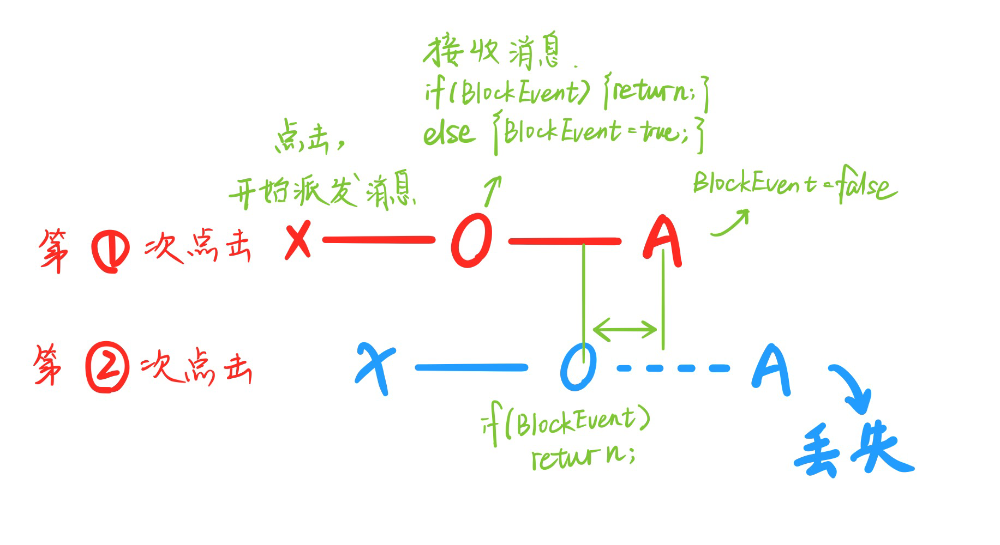
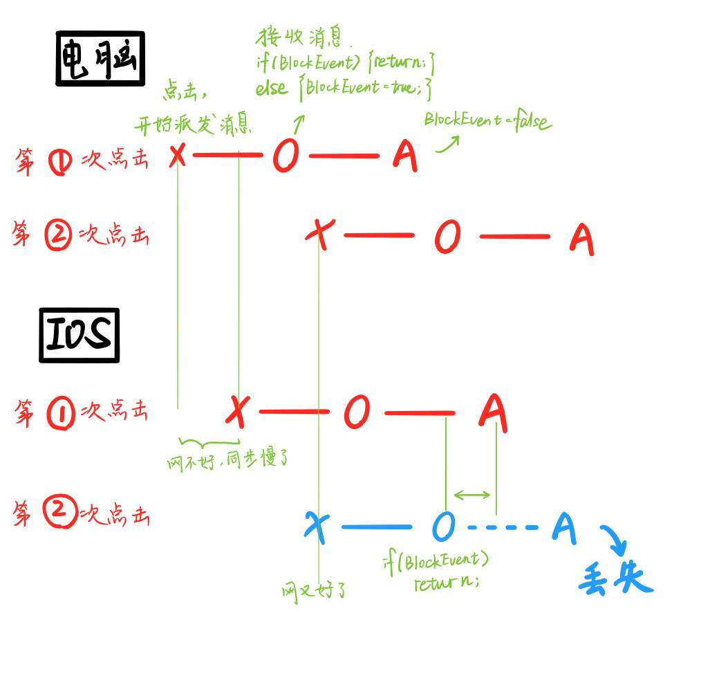
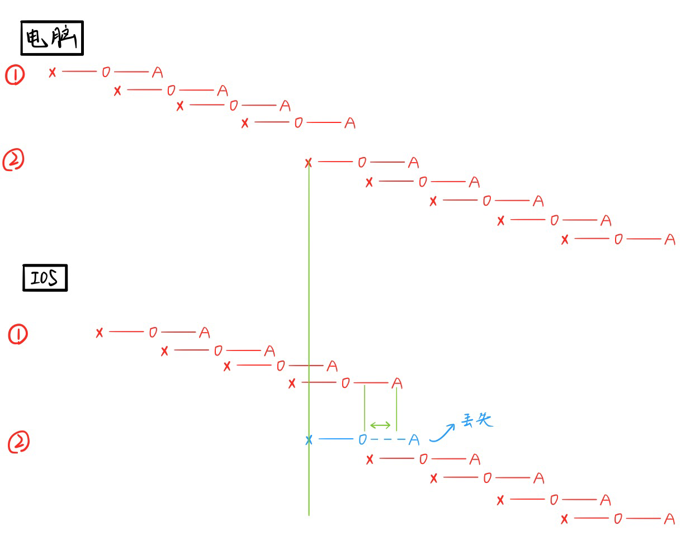

Cocos Creator 2.4.5 | typescript
实践笔记
一、点击不规则按钮¶
1 2 3 4 5 6 7 8 9 10 11 12 13 14 15 16 17 18 19 20 21 22 23 24 25 26 27 28 29 30 31 32 33 34 35 36 37 38 39 40 41 42 43 44 45 46 47 48 49 50 51 52 53 54 55 56 57 58 59 60 61 62 63 64 65 66 67 68 69 70 71 72 73 74 | |
二、资源压缩¶
- 合并图集。但注意适用于图片大小差不多的情况。若图片素材大小相差过大，会导致图集留白过多，反而导致资源过大。
nginx开启gzip压缩- 切记少用大背景图片，大色块最好用自带素材改色
- CDN加速
三、新手引导¶
四、抽卡游戏，卡牌路径写法¶
1 2 3 4 5 6 7 8 9 10 11 12 13 14 15 16 17 18 19 20 21 22 23 24 25 26 27 28 29 30 31 32 33 34 35 36 37 38 39 40 41 42 43 44 45 46 47 48 49 50 51 52 53 54 55 56 57 58 59 60 61 62 63 64 65 66 67 68 69 70 71 72 73 74 75 76 77 78 79 80 81 82 83 84 85 86 87 88 89 90 91 92 93 94 95 96 97 98 99 100 | |
五、游戏中常用设计模式¶
- 单例模式
- 观察者模式
六、消息序列机制¶
按照执行顺序从早到晚排序：
普通代码 -> Promise() -> setTimeout
七、坑¶
- Cocos Creator 2.4.3 在Button组件被另一个Button覆盖时，只能点击到上层按钮。若点击覆盖部分时，想要两个按钮同时响应，可自己注册监听事件。
- 注意layout布局控件的使用：若子控件有添加和删除操作，记得排布后把父控件的layout属性删掉。否则删哪个都会自动对齐。
- 注意Widget组件的使用，对于需要移动的物体，记得用过后要删除该属性。
八、遇到的问题及解决方法¶
1. 问题描述A¶
点击到一个按钮派发点击事件，会触发动效和音效。需要在音效结束前禁止其他操作，于是在接受到派发事件后需要启用blockevent(禁止输入面板)。但是，如果点击下一个按钮的速度够快，还是会打断第一次点击的音效。
原因¶
派发事件是需要时间的，第二次点击在第一次派发事件被处理之前，就导致了第一次点击音效被打断
解决方案¶
在处理派发事件之前，判断一下是否启用了blockevent，若有就return，不处理动效。 如图：

2. 问题描述B¶
但是！上面又导致了新的问题。在网速较差的IOS平台，同步就会出问题。如图：

即，电脑端的两次派发都是独立执行的，没有问题。但在IOS同步的时候，第一次点击时网差卡了一下，开始派发事件的时候晚了一点。第二次同步的时候网又好了，准时开始派发事件。这样会导致IOS端，第二次事件接收时由于第一次事件还没执行完而被丢弃，导致操作无效。
解决办法¶
删除问题A的解决办法，因为只有我本地出了那个问题（可能是电脑太差了），其他打包出来的平台经测试都没有这个问题。
3. 问题描述C¶
但是，同样的写法，为什么鼠标的移动事件不会出问题呢？
原因¶
移动事件的事件派发是一连串的消息，它其实也丢失了第一个事件，但是它持续移动事件多，所以丢一两个不明显。
如图：

最后更新: August 6, 2021 15:54:13
Contributors: